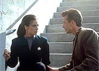
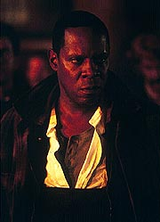
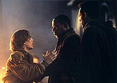
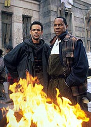
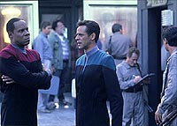

MANCHETE
DO EPISDIO
Crtica
social oferece uma boa olhada
na Terra arrasada do sculo 21
Episdio
anterior | Prximo
episdio
Sinopse:
Data Estelar: 48481.2.
A Defiant chega a terra para um
simpsio no QG da Frota Estelar sobre o quadrante Gama. Sisko,
Dax e Bashir se transportam para a superfcie, mas para a sua
surpresa se materializam, sim, em So Francisco, mas na data
errada, no ano de 2024. Sem identidade da poca (e sem os seus
comunicadores, roubados enquanto eles estiveram desacordados
devido ao choque do transporte), Bashir e Sisko so encontrados
por dois oficiais de segurana armados (de nome Vin e Bernardo) e
jogados no "Bairro Santurio - A" (um dos muitos
literais "campos de concentrao urbanos" existentes
quela poca). Nesses "santurios", o ento falido
sistema de seguridade social americano amontoava doentes mentais,
desempregados e demais "sem teto" e os esquecia como uma
pilha de jornal velho.

Dax
teve melhor sorte (ainda possui o seu comunicador) e foi
encontrada por um milionrio da internet, de nome Chris Brynner.
Na Defiant, O'Brien checa o transporte e descobre uma descarga de
energia temporal, um pouco antes do incio do transporte dos trs.
A Frota Estelar confirma que eles no chegaram ao seu destino.
Bashir e Sisko vo para o centro de triagem do "santurio".
Sisko diz a Bashir que as pessoas l detidas no so
criminosas, apenas pessoas sem ter onde morar e como se manter.
Dax usou o acesso rede oferecido por Brynner e conseguiu pedir
uma "segunda via" da sua identidade e dinheiro. Vin
passa as impresses digitais de Sisko e Bashir pelo computador,
que diz que elas no existem. Sem dinheiro e "vestidos como
palhaos", o segurana no v outra sada seno dar a
cada um deles um formulrio de cadastro.
O'Brien finalmente desvenda o ocorrido, uma singularidade quntica
microscpica atravessando o Sistema Solar explodiu no exato
momento do transporte, polarizando partculas cronitrnicas (um
subproduto do uso do dispositivo de camuflagem) que se armazenaram
com o tempo no escudo de ablao da Defiant. O feixe de
transporte foi desviado pelas partculas polarizadas para o
passado, sculos no passado.
Esperando na fila, Sisko observa o calendrio e percebe que
faltam poucos dias para as famosas "Revoltas de Bell",
que ocorreram naquele exato local. O comandante diz a Bashir que
este foi um dos mais violentos conflitos civis da histria
americana. Os residentes tomaram o controle do centro de triagem e
fizeram os funcionrios de refns. As autoridades, acreditando
na morte dos refns, entraram no local na marra e produziram a
morte de centenas de residentes durante a operao. S que os
refns nunca foram feridos, pela interveno de um residente,
de nome Gabriel Bell, que sacrificou a sua vida para que nada
acontecesse a eles. A nobre morte de Bell produziu uma verdadeira
revolta dentre a populao americana, que levou a profundas
mudanas sociais.

Finalmente
Bashir e Sisko so entrevistados por Lee, a funcionria de
triagem. Ela descobre que eles no so "Lentos"
(doentes mentais --como Vin estava pensando), mas sim
"Duros" (pessoas procurando ajuda e trabalho).
Entretanto, sem maiores referncias pessoais, os dois tm que
permanecer no "santurio". Ela lhes d "cartes
de alimentao" para retirar comida e gua dos postos
especficos para isso espalhados pelo santurio e diz para eles
terem cuidado com os "Brutos" (residentes que vivem s
custas de outros). Dax continua tentando entrar em contato com os
dois sem sucesso. Brynner diz que nenhum pronto-socorro acusou a
entrada de nenhum deles. Ele diz que arrumou acomodaes para
ela por cinco noites e a convida para uma festa na noite seguinte
e ela aceita.
Sisko e Bashir procuram por um lugar para ficar, mas cada vez
ouvem a mesma histria: "que o prdio est cheio".
Eles se encontram com um grupo de "Brutos" liderados por
"B.C", espancando e roubando o "carto de alimentao"
de um "Lento". Eles no participam da briga.
O'Brien consegue uma maneira de recriar o acidente e montar uma
operao de resgate, mas ele no sabe a poca exata e eles no
podero tentar muitas vezes, devido ao limitado suprimento de
"partculas polarizadas". Ele e Kira so voluntrios
para a misso de resgate.
Aps passar a noite na rua, Sisko e Bashir decidem subir em um
dos prdios para ter uma panormica do local. Eles acabam
trocando as vestimentas com outros dois residentes para terem
acesso ao teto do prdio deles. Subindo as escadas eles encontram
Michael Webb cuidando do seu filho Danny Webb, ferido pelos
"Brutos". Bashir ajuda o rapaz e Webb insiste para que
eles ajudem os outros, mas Sisko e Bashir no podem interferir.
Na festa de Brynner, Jadzia, Chris e dois outros convidados
conversam e surge o assunto que se a polcia pega algum sem
documentos na rua, fatalmente essa pessoa ir parar em um
"santurio". Jadzia pede ento que Brynner verifique
se foi isso que aconteceu com Bashir e Sisko e ele concorda.
Esperando na fila pelo jantar, Bashir atacado por
"B.C." e sua quadrilha e ele e o comandante lutam, ainda
que em desvantagem numrica. Neste instante, um homem bastante
parecido com Sisko fisicamente vem para ajudar e acaba sendo
esfaqueado por "B.C" e acaba morrendo. Sisko pega o seu
carto de identificao e aps os dois despistarem a polcia
ele diz ao doutor que aquele homem era Gabriel Bell. Sisko decide
que eles tm que evitar que os refns sejam mortos a todo custo.
No momento em que Kira e O'Brien se preparam para partir em misso,
todo o sinal da presena da Frota Estelar desaparece e o nico
sinal subespacial detectvel Romulano, da vizinhana de Alfa
Centauri. O chefe teoriza que o acidente deve ter criado uma
"bolha subespacial" ao redor da nave que a isolou dos
efeitos da mudana da linha temporal, que ele acredita obviamente
serem resultado da viagem de Sisko e cia. ao passado.

No
dia seguinte, Sisko e Bashir procuram Webb para colaborar no que
for necessrio para o bem dos moradores e concordam em ajudar na
organizao de uma passeata em frente ao centro de triagem em
dois dias, com o objetivo de alertar a sociedade da situao nos
"santurios". Chris diz a Jadzia que de fato Bashir e
Sisko foram admitidos, mas acha-los ser difcil com cerca de 10
mil residentes.
Sisko e Bashir esto avisando as pessoas sobre a passeata, quando
explode uma arruaa na porta do centro de triagem, Bernardo est
sendo massacrado pelos residentes. Sisko toma a arma de Bernardo
das mos de um "Lento" e Bashir acaba ajudando segurana
a entrar no centro, que a esta altura j havia sido tomado por
"B.C" e o seu pessoal. Sisko diz que veio ajudar a
guardar os refns, em nmero de cinco, incluindo Vin, Lee e
Bernardo. O comandante no v outra sada e diz a
"B.C" que o seu nome Gabriel Bell.
Comentrios:
Com a falta de intensidade dramtica de boa parte desta terceira
temporada at aqui (isso sem falar nos dois fracassos abismais
nas ltimas trs semanas), DS9 estava de fato devendo um
grande episdio. Foi o que tivemos nesta semana, um soberbo
segmento com uma profunda relevncia social, sem dvida um dos
mais marcantes de toda a srie. Ainda que um capenga dispositivo
de trama (envolvendo viagem no tempo) e uma tonelada de
"tecnobaboseira" incomodem um bocado. Mais detalhes, sem
ter a necessidade de ser detido em um "bairro santurio"
no processo, nas linhas abaixo.
Os autores do episdio claramente tinham dvidas sobre a maneira
que iriam utilizar para colocar Sisko, Bashir e Jadzia em 2024. O
uso do transporte est ok, mas a explicao a respeito do
ocorrido, alm de ser exagerada, completamente desnecessria
(por que no usar uma idia simples envolvendo manchas solares,
por exemplo, ou melhor, ainda algo relacionado aos Profetas?).
Qualquer tpico espectador de Jornada sabia que algum
"acidente temporal" (TM) havia ocorrido. O que torna as
cenas a bordo da Defiant extremamente enfadonhas e previsveis,
especialmente quando comparadas s cenas do passado. Existe tambm
uma estranha anomalia no processo que no modifica a linha de
tempo no mesmo instante em que o trio se transporta para o passado
(mesmo o proposto isolamento temporal da Defiant no parece
totalmente convincente).

De
fato, o ideal seria que as cenas na Defiant fossem eliminadas
completamente e o nosso valoroso trio conseguisse voltar com os
seus prprios meios (nessas condies um dispositivo de trama
envolvendo os Profetas cairia como uma luva). Este o grande
problema do episdio. O mais triste que, apesar do excesso de
"tecnobaboseira" utilizado, nunca explicado
exatamente como O'Brien conseguiu encontrar provveis destinos
temporais para o nosso intrpido trio (alm de ningum ao menos
mencionar a possibilidade da utilizao do infame "efeito
estilingue"(TM) para viajar no tempo).
Comentrio social no novidade em Jornada nas Estrelas.
Pelo contrrio, uma das suas principais caractersticas
identificveis em seus mais de 35 anos de existncia.
Normalmente Jornada trata tais questes atravs de
alegorias, usualmente com aliengenas e camadas e mais camadas de
metforas. O presente episdio toma um diferente caminho, ele
o mais cru e direto possvel. Situando a sua ao apenas duas dcadas
em nosso futuro, ele apresenta um "aviso" to
bem-concebido que soa quase como uma profecia para o nosso tempo.
Desde o momento em que coloca sem reservas o tratamento
diferenciado dado a Sisko & Bashir e a Dax, o episdio no
recua em seu argumento. Os "santurios" so de fato
bastante plausveis. No difcil imaginar um cenrio em que
mesmo ativistas sociais respeitados e mesmo os residentes da
primeira leva seriam a favor deles inicialmente. Tambm no
difcil imaginar que em um certo ponto do caminho eles se
tornariam apenas uma maneira de esconder os problemas da sociedade
da prpria sociedade.
Quando Sisko contou a histria das "Revoltas de Bell",
ficou claro que o residente iria acabar morto (provavelmente por
culpa de nossos heris) e Sisko tomaria o seu lugar, mas isso no
incomoda de forma alguma, pois ns sabamos desde o incio como
a histria iria terminar, pois o prprio Sisko descreve tudo o
que deve acontecer. A funo maior do segmento ser uma
testemunha da histria de Jornada e, nesses termos,
funciona admiravelmente bem.
Jadzia se mostrou bastante esperta, lidando com o bvio interesse
de Brynner por ela enquanto colhia informaes sobre onde e
quando ela se encontrava e sobre o paradeiro dos seus dois
companheiros (aps "Meridian"
e "Fascination",
a personagem estava realmente precisando de uma espcie de
"redeno", que felizmente se deu aqui).

Um
interesse pelas partes mais sombrias e importantes da histria
faz bastante sentido para Sisko, posicionando-o como uma pessoa
bastante consciente, socialmente falando. Suas atitudes,
inicialmente de manter uma postura discreta e procurar
cautelosamente por um meio de fuga e depois (devido morte de
Bell) de decidir por ficar e defender os refns e em ltima instncia
tomar o lugar do prprio Bell, foram sempre sensveis e fizeram
bastante sentido.
Bashir formou uma efetiva dupla com Sisko, contrapondo o seu
idealismo com a seriedade e ponderao do comandante. Foi o
melhor momento do personagem na temporada (em contrapartida, o
maior momento do doutor se deu no pssimo "Distant
Voices", reforando a mxima "de que nem sempre o
maior o melhor"(TM)).
Os demais "personagens de 2024" trouxeram embutidos em
suas caracterizaes o quanto o esprito das pessoas se
encontrava destroado (de uma maneira ou de outra) naquela poca.
Brynner (bom, bem l no fundo, mas totalmente alienado com relao
ao sofrimento dos menos favorecidos), Vin (o veterano que tenta
esconder com ironia e sarcasmo a sua prpria frustrao e falta
de esperana), Bernardo (o novato que traz como nica possvel
fonte redeno a sua mulher e filhos), Lee (a assistente social
feita uma virtual empihadora de papel), Webb (aparentemente um
outrora executivo, que tenta mais que todos manter a dignidade em
condies to adversrias) e finalmente "B.C" (que
criou uma espcie de personagem por conta prpria para
sobreviver no "santurio" e projetou o melhor que lhe
ainda restava naquele infame chapu).
Reza Badiyi foi absolutamente matador, nas cenas "no
passado" (as cenas do "presente" a bordo a Defiant
foram todas triviais). Com tomadas longas e abertas, bastante
interessantes e de bom gosto. A forma como ele capturou o trabalho
de fundo dos figurantes, equilibrando a presena dos diversos
grupos de pessoas presentes no "santurio", tambm foi
digna de nota. A espetacular fotografia "desbotada" de
Jonathan West serviu para traduzir a falta de esperana daquele
perodo e os demais departamentos de produo tambm no
desapontaram.
Brooks fica com o destaque da semana, sua descrio daquele perodo,
juntamente com as imagens, atinge um nvel realmente tocante. A
facilidade de Brooks com cenas de ao impressiona. A tomada
final empunhando a escopeta absolutamente clssica dentro da srie.
El Fadil mostrou um belo controle do personagem, enquadrando o
idealismo de Bashir de uma maneira mais madura. Ele mostrou mais
uma vez que o mais efetivo dos atores, dentre todos os mdicos
de Jornada, em cenas de ao. Farrell, quando se concentra,
funciona bem. O problema quando ela relaxa um pouco e comea a
fazer "caras e bocas". Aqui ela funcionou bem com
algumas excees (como quando "descobre" o que Brymmer
faz para viver, por exemplo). Os demais regulares s marcaram
ponto e nada mais.
Todos os atores convidados foram bastante efetivos (alguns com
partes minsculas inclusive) em apresentar as diversas facetas
daquele tempo e lugar, mas o destaque vai para Bill Smitrovich
como Michael Webb, mantendo (de uma forma realista) a integridade
do esprito humano.
Sisko no se refere a uma possvel visita ao seu pai, que
aparentemente "continuava morto" para equipe dos
roteiristas (Joseph sisko iria finalmente aparecer pela primeira
vez na srie em "Homefront" e em "Paradise
Lost", da prxima temporada). O comandante de fato tem
uma irm que nunca apareceu na srie em cena.
A cena residual de Quark foi meio absurda, mas honrou o esprito
do personagem e foi uma bela referncia a "The
Search". Bashir um aficcionado por histria ("The
Homecoming"), mas no da histria terrestre do sculo
21 (um elemento bastante conveniente para justificar a exposio
de Sisko sobre os "santurios", ainda que em linha com
a personalidade de Bashir).
Por que o chefe no faz nenhum comentrio sobre a Terra aps a
mudana da linha temporal? Ele s se refere Frota Estelar. A
fala de O'Brien tambm sugere que Alfa Centauri foi colonizada
pela humanidade, pondo um ponto final em uma antiga discusso
dentro do franchise. O episdio tambm diz explicitamente que
O'Brien nunca foi oficial, outro eterno ponto polmico entre os fs.
Que destino tiveram os uniformes e comunicadores de Bashir e
Sisko? Ser que Dax queimou o seu uniforme? Fica pouca dvida
que Dax tenha "hackeado" alguns sistemas para conseguir
a identificao e o dinheiro, mas fica a curiosidade sobre as
informaes que Bashir e Sisko colocaram em seus formulrios
(informaes que dificilmente entraram no sistema, alis). O
que entrou no sistema com certeza foram s fotos deles dois com
uniformes e as suas digitais (curioso tambm que o centro de
triagem no utilizasse o exame de retina --muito caro).
Aparentemente o uso de computadores com comando vocal e com
monitores sensveis ao toque de largo uso em 2024. Observando
a internet do perodo, percebemos uma interface dividida em
"canais", competindo literalmente no tapa. Interessante
tambm que um carto de acesso rede parece valer tanto quanto
um bom e velho RG.
Outra eterna discusso entre os fs envolve a localizao histrica
dos eventos mostrados neste episdio e as das trs guerras
terrestres citadas inicialmente j na Srie Clssica:
"Guerras Eugnicas" (aquela envolvendo Khan e referida
em "Space Seed", da Srie Clssica, e
que ocorreu aparentemente dentre os anos de 1992 a 1996 e afetou
fortemente apenas a sia); "Guerra do Coronel Green"
(indiretamente referida em "The Savage Curtain",
da Srie Clssica, envolvendo o infame coronel Green,
aparentemente ocorrida na Europa em poca prxima de "Past
Tense" - grande especulao neste ponto, apesar de
trechos de dilogo em "Past Tense", na conversa
da festa de Brynner, aparentemente justificarem um encadeamento de
eventos no sentido sia-Europa-Amrica) E a "Terceira
Guerra Mundial" (feita em escala global e com a utilizao
de artefatos nucleares, tal conflito ocorreu, aps os eventos de "Past
Tense", por volta de 2050 e terminou antes do primeiro
contato com os Vulcanos em 2063, tendo sido citada vrias vezes
na Srie Clssica e explicada melhor no filme "Primeiro
Contato").
claro que no universo de Jornada nenhum evento marcou o
verdadeiro incio da redeno da humanidade (o incio da
construo do infame "Paraso de Gene
Roddenberry"(TM)) quanto o primeiro contato com os Vulcanos,
aquele o momento central do universo de Jornada, no os
eventos retratados em "Past Tense". Mas no
custa especular que, aps a "Terceira Guerra Mundial",
com os sistemas de governo e a economia mundial largamente em
colapso, tenham sido os sentimentos produzidos por este evento
(amplificados ao longo do tempo por inmeros outros, na falta de
melhor termo, heris) que tenham prevenido a definitiva erradicao
da humanidade, ento possibilitando o vo da Phoenix (melhor
nome para uma nave impossvel, naquelas circunstncias).
interessante a utilizao da dupla Bashir e Sisko, se
considerarmos o futuro da srie. Bashir foi o definitivo smbolo
do idealismo em DS9, especialmente no trato com a infame Seo
31, mas no sem antes se mostrar no to puro assim e ter um
segredo pessoal revelado. Sisko, por sua vez, se mostrou, ao longo
da srie, o mais sombrio de todos os oficiais da Frota e empregou
mais de uma vez um pragmatismo "nada Roddenberryano"
durante a guerra com o Dominion, nas duas ltimas temporadas.
"Past Tense, Part I", apesar dos seus bvios
defeitos de trama e da sua abordagem direta em sua mensagem,
atitude atpica em Jornada (que com certeza o torna menos
palatvel para alguns fs). Emerge como um grande vencedor, ao
mesmo tempo testemunho e aviso de eventos que esperamos que nunca
venham a acontecer. Um verdadeiro clssico da srie.
Citaes
Sisko - "Treat people
in your debt like family: exploit them."
("Trata as pessoas em dvida como famlia:
explore-as.")
Quark - "You can't free a fish from water."
("Voc no pode libertar um peixe da gua.")
Bashir - "Twenty-first century history is not one of my
strong points --too depressing."
("Histria do sculo 21 no um dos meus fortes --muito
deprimente.")
Bashir - "Causing people to suffer because you hate
them... is terrible. But causing people to suffer because you have
forgotten how to care --that's really hard to understand."
("Causar sofrimento s pessoas porque voc as odeia...
terrvel. Mas causar sofrimento s pessoas porque voc se
esqueceu de como se importar --isso realmente difcil de
entender.")
Bashir - "Are humans really any different than Cardassians
or Romulans? If push comes to shove, if something disastrous
happens to the Federation, if we are frightened enough, or
desperate enough, how would we react? Would we stay true to our
ideals, or would we just end up here, right back where we
started?"
("Os humanos so realmente diferentes dos Cardassianos ou
dos Romulanos? Se levarmos um empurro, se algo desastroso
acontecer Federao, se formos assustados o suficiente, ou
desesperadamente, como reagiramos? Seguiramos fiis a nossos
ideais, ou terminaramos assim, logo de volta onde comeamos?")
Sisko - "The name is Bell. Gabriel Bell."
("O nome Bell. Gabriel Bell.")
Trivia:
 O problema dos "sem teto" dos Estados Unidos sempre foi
algo que incomodou a Robert Hewitt Wolfe. Tal problema pode ser
facilmente observado em Los Angeles, especialmente em Santa Mnica.
"Em Santa Mnica, os 'sem teto' se tornaram 'esculturas
vivas'", comentou Ira Behr na poca. Wolfe comeou a
trabalhar ento em um conceito que colocava Sisko como um
"sem teto" em Santa Mnica em 1995. A primeira
tentativa, batizada "Cold And Distant Stars", trazia uma
noo vaga que Sisko olharia o cu, as estrelas, o lugar aonde
ele pertence. O desejo de Sisko o levaria ento a ser considerado
como louco pelos demais, mais um destes famosos "profetas
urbanos". Tal conceito no funcionou nem para Wolfe, muito
menos para Behr.
O problema dos "sem teto" dos Estados Unidos sempre foi
algo que incomodou a Robert Hewitt Wolfe. Tal problema pode ser
facilmente observado em Los Angeles, especialmente em Santa Mnica.
"Em Santa Mnica, os 'sem teto' se tornaram 'esculturas
vivas'", comentou Ira Behr na poca. Wolfe comeou a
trabalhar ento em um conceito que colocava Sisko como um
"sem teto" em Santa Mnica em 1995. A primeira
tentativa, batizada "Cold And Distant Stars", trazia uma
noo vaga que Sisko olharia o cu, as estrelas, o lugar aonde
ele pertence. O desejo de Sisko o levaria ento a ser considerado
como louco pelos demais, mais um destes famosos "profetas
urbanos". Tal conceito no funcionou nem para Wolfe, muito
menos para Behr.
Foi ento que Behr trouxe um elemento que se tornou essencial
histria: "as revoltas de Attica". Referindo-se aos
eventos produzidos pelas condies subumanas do presdio por
volta de 1972, onde os prisioneiros, literalmente tratados como
animais, se revoltaram com a situao. Behr decidiu ento pelo
conceito dos "campos de concentrao urbanos" para o
episdio.
A uma das coisas mais incrveis aconteceu. Quando a equipe
preparava a histria, surgiu uma manchete no jornal "L.A.
Times" que detalhava uma proposta da prefeitura da cidade
para transformar o centro de L.A. em algo "mais amigvel"
para o comrcio. O artigo detalhava um autntico "campo de
concentrao urbano" onde seriam colocados os "sem
teto", para "limpar" as ruas. Behr lembra que na poca
as pessoas chegavam a perguntar se ele havia tido acesso a alguma
informao privilegiada da prefeitura. "Foi assustador,
realmente assustador", lembra o produtor-executivo.
O conto de Behr e Wolfe vai ainda mais longe profetizando que a
classe mdia americana vai um dia se juntar misria dos
destitudos e dos doentes mentais. A primeira cena em 2024 j
enfatiza o preconceito no tratamento diferenciado dado a Jadzia
Dax com relao dupla Bashir & Sisko.
Termos como "Dims" ("Lentos"),
"Ghosts" ("Brutos"), "Gimmies"
("Duros") foram tirados do filme "The Magnificente
Seven" e o nome Gabriel, do anjo Gabriel. O nome
"B.C" foi uma homenagem assistente de direo, B.C.
Cameron. Como mecanismo de viagem no tempo, Wolfe utilizou o
transporte, pois nunca havia sido utilizado antes. O conceito de
"Poltica de Deslocamento Temporal" foi introduzido
aqui e mais tarde modificado na "Primeira Diretriz
Temporal" ao longo dos anos recentes em Jornada. Tal
poltica acabou dando origem aos infames "investigadores
temporais" de "Trials and Tribble-ations",
da quinta temporada de DS9.
Os atores e equipe foram filmar pela primeira vez na seo
"das ruas de Nova York" dos estdios da Paramount. O
diretor Reza Badiyi j tinha experincia com o ambiente, tendo
trabalhado ali em "Mission: Impossible" e
"Mannix", entre tantos outros programas. O cinegrafista
Jonathan West disse que grande parte da fotografia do episdio
foi estabelecida pela direo de arte, escurecendo os cenrios
e os sujando. West lembra tambm que eles trabalharam bastante
noite e ele utilizou duas lmpadas de xennio penduradas em
altos guindastes para simular as patrulhas com helicpteros.
Certas partes tiveram cerca de 100 pessoas em cena.
Westmore e Blackman tiveram o trabalho facilitado esta semana, sem
aliengenas. A maior parte do esforo se baseou em
"sujar" as pessoas e "estragar" as suas
vestimentas. Siddig El Fadil gostou muito do episdio e da direo
de Badiyi e o compositor Dennis McCarthy trouxe uma trilha com
apenas sete minutos de msica, outro diferencial do episdio.
Certos elementos e conceitos no usados em "Past
Tense" acabaram tendo seu lugar em "Far Beyond
the Stars", da sexta temporada. Inicialmente Wolfe no
queria usar a viagem no tempo e um dos muitos conceitos
alternativos produzidos nas reunies da equipe de roteiristas foi
de que Sisko teria a sua conscincia "deslocada" para a
de um ancestral e ele encontraria os outros personagens na poca,
como humanos, sem maquiagem. Odo como um guarda de trnsito e
Bashir como o mdico de um pronto-socorro, por exemplo.
Ficha
tcnica:
Histria de Ira Steven Behr
& Robert Hewitt Wolfe
Roteiro de Robert Hewitt Wolfe
Direo de Reza Badiyi
Exibido em 02/01/1995
Produo: 057
Elenco:
Avery Brooks como
Benjamin Lafayette Sisko
Ren Auberjonois como Odo
Nana Visitor como Kira Nerys
Colm Meaney como Miles Edward O'Brien
Siddig El Fadil como Julian Subatoi Bashir
Armin Shimerman como Quark
Terry Farrell como Jadzia Dax
Cirroc Lofton como Jake Sisko
Elenco convidado:
Jim Metzler
como Chris Brynner
Frank Military como Bittle "B.C." Colrich
Dick Miller como Vin
Al Rodrigo como Bernardo
Tina Lifford como Lee
Bill Smitrovich como Michael Webb
Henry Hayashi como um convidado masculino
Patty Holley como uma convidada feminina
Richard Lee Jackson como Danny Webb
Eric Stuart como um guarda
John Lendale Bennett como Gabriel Bell